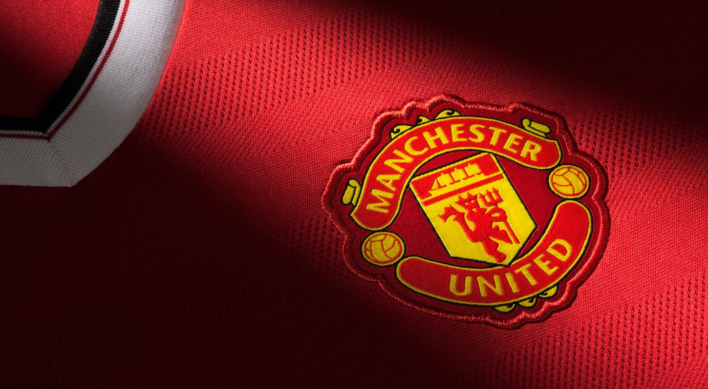

My Favourite Team

My favourite team are Manchester United. I have followed them since I was young due to my father and two grandfather's allegiance to the club. The team I grew up watching made me fall in love with the sport and watching them win trophy after trophy was a great part of my childhood. Although recent years have been a difficult time for the team on the pitch this has not stopped me in the slightest of supporting the team week in and week out.
There have been many great players to have worn the Manchester United over the years but I would have to say my favourite of all time would be Roy Keane. Keane played for United over 300 times winning 7 Premiership titles, 4 F.A. Cups and a Champions League. Roy also captained the club.
Roy's leadership and toughness on the pitch are only some of the attributes he contains and those traits along with his tremendous footballing talent is why he is my favourite player.